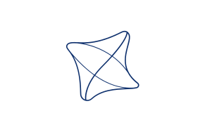

Tu sa môže začať tvoja budúcnosť.
Žilinská univerzita v Žiline a Fakulta prevádzky a ekonomiky dopravy a spojov
Zdroj: fpedas.uniza.sk (stav 23. 11. 2026), stránka Katedry. Kliknutím rozbalíš popis.
Zdroje: fpedas.uniza.sk (Bakalárske štúdium, aktuality 2026), Sprievodca prváka 2026/2027. Foto: FPEDAS.
Interaktívna mapa areálu: uvedená na oficiálnej mape UNIZA ako campus.uniza.sk

UNIZA · FPEDAS Ponuka štúdia
Ponuka štúdia